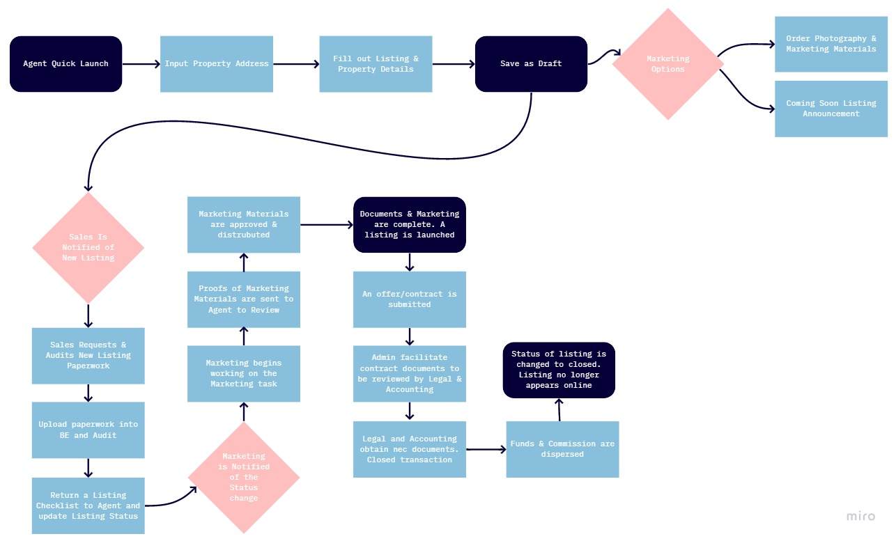
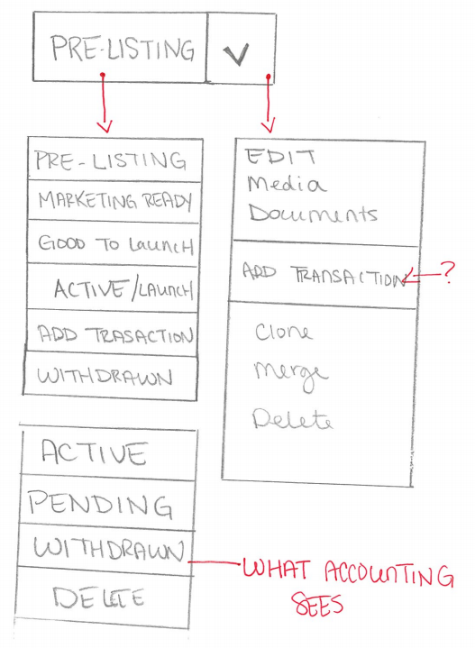
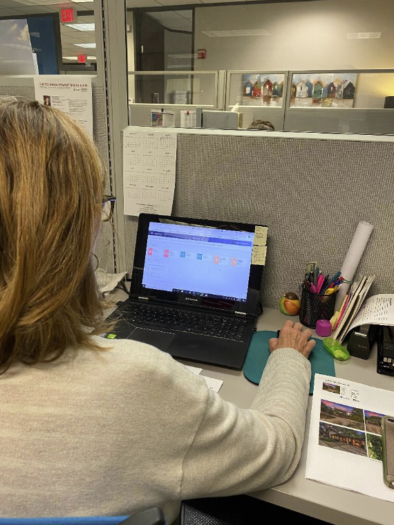

KSIR Brokerage Engine
Brokerage Engine
Kuper Sotheby's Intl Realty / Real Estate Platform
Role: UX | UI Designer
Brokerage Engine is a full back end management system for residential real estate brokerages. Founded by real estate and software industry veterans, Brokerage Engine was created to solve a real estate brokers most pressing issues including commission schedule management, back office accounting and more.


Research for Brokerage Engine is an all day, everyday task.
My day to day duties consist of working in our Austin Real Estate offices assisting staff and clients in utilizing the platform. Assisting and educating users helps me to understand what is working for the user and what features become Pain Points.
Each department sees the platform laid out in a different format, and has permissions and access to different feautures. This on hands insight allows me to see how each feature plays off of each other in assisting different departmetns level of communication.

These interactions help me to define each departments top needs:
Currently our developement team's focused is on the exsisting features, not so much the design system and aestetic of the platform. Having these guidelines helps me narrow down my focus to making the exsisting feautres more user friendly and provide better communication throughout the company.

I often use storyboards and user scenarios to communicate the pain points and needs of users to developers and stakeholders.
These boards keep the message interesting and tangible to digest.
I also use competetor analysis to compare what other real estate management platforms are using and to point out which of those features our users enjoy.

With an idea of what the user wants and needs, and what updates can achieve these needs I create flow charts to explain how the user(s) will move throughout the site.

Flow charts help all parties visualize the process. Especially since most developers and stakeholders are not actively in Brokerage Engine completing these same tasks on a regular basis.
I then begin prototyping by creating low fidelity sketches of design ideas

I will typically show these sketches around to users that I know were experiencing the specific issue and get their immediate feedback. With that feedback in mind, I then move on to mid and high fidelity clickable prototypes.
Click HERE to view one of my clickable prototypes that I use for testing and presenting!

Once clickable prototype are ready I begin testing users
Testing typically consist of me targeting users who utitilize the specific features being test on a daily basis, or users who have had frustrations with the features in questions.
Users will be give 1-3 scenarios and task to complete. I then film and observe the interactions noting when a stumble or moment of confusion comes into play.

After testing is complete, data is compiled and analyzed, and a presentation driven by facts is created I then present all findings to our developers and stakeholders.